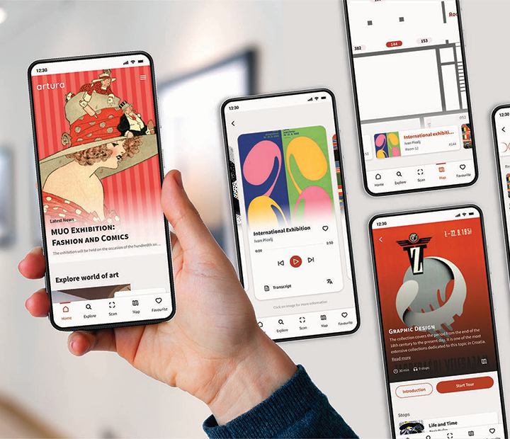
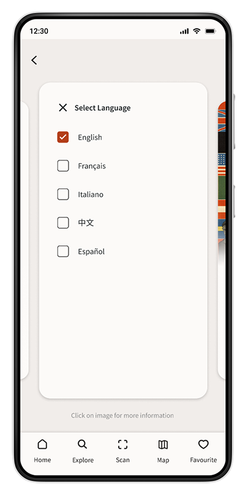
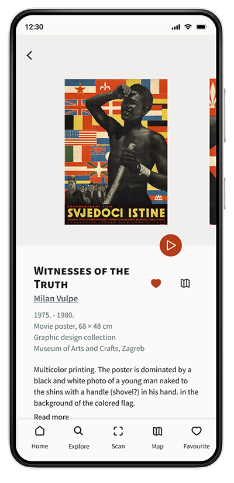
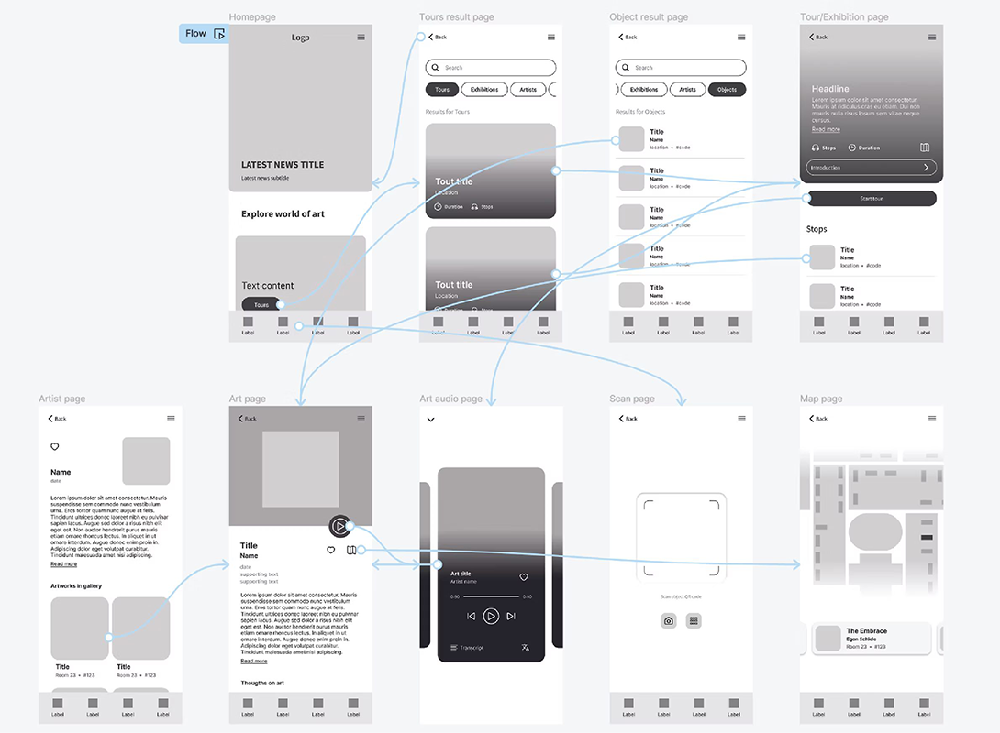
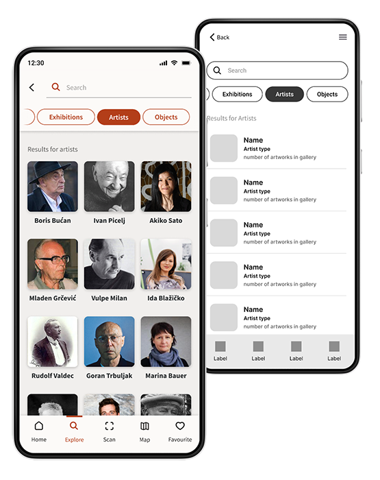
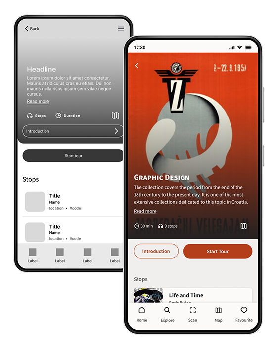

Artura
Mobile app
Artura is an audio-tour app offering diverse, multimedia-guided tours for museums and art galleries. It connects users with information on artists, artworks, and exhibitions to make art more accessible and enrich the cultural experience.

Project Overview
Conducting interviews, paper and digital wireframing, low and high-fidelity prototyping, conducting usability studies, accounting for accessibility, and iterating on designs.
Project Goal
Design an app with audio tours that let people interact at their own pace, along with engaging information and content for people to learn about art.
User Research
User interviews revealed that art and travel enthusiasts often avoid galleries due to limited information and a lack of personalized tours.
The research also highlighted broader challenges like accessibility, time constraints, and limited learning resources.
Goals
- Volunteer at the Community Arts Center.
- Help and improve the well-being of individuals.
- Create a positive environment for people to express themselves.
Frustrations
- “Balancing work, family time, and volunteering can be exhausting.”
- “When looking at art in galleries, it can be challenging to find information.”
Key Challenges
01
Accessibility
People with impairments often struggle with reading small captions in galleries or information that is not audible.
02
Time
Individuals find it difficult to join gallery tour groups due to a lack of free time.
03
Content availability
Information about artworks and artists is not available for users to read at home or outside of art galleries.
Access to the audio transcript and language selection.


Map button for easier gallery navigation and like button to bookmark items for future access.
Starting the Design
Paper Wireframe
Making iterations of each screen of the app on paper ensured that elements that made it to the digital wireframe would be well organized with content that addresses user pain points.
I emphasized images and content search for easier flow through app.
Low-Fidelity Prototype

User testing results
I conducted two rounds of usability studies. Results from the first study helped me iterate and build from wireframes to mockups.
In the second study on high-fidelity prototype, findings showed parts and elements that needed to be improved and refined.
01
Flow
Users want an easier flow through the app.
02
Button hierarchy
Users find the introduction and start tour buttons confusing.
03
Search page
The artist search page has an excessive amount of information.
Changes
Bottom navigation bar for easier user flow.
Improved button hierarchy with better placement and contrast.


Artist information was reduced to enhance visibility.
Mockups and
High-Fidelity Prototype
All insights gained through user testing helped me improve elements and user flow for the final high-fidelity app prototype.
Take a look and test it out.